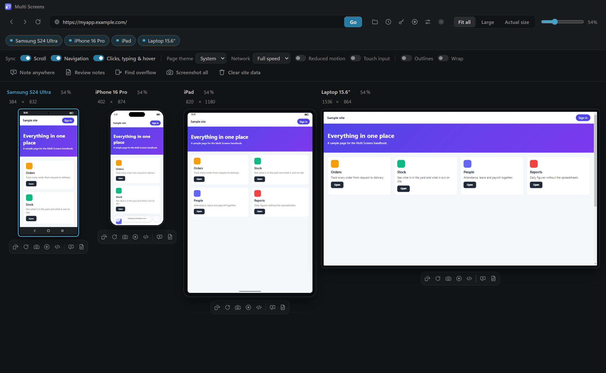
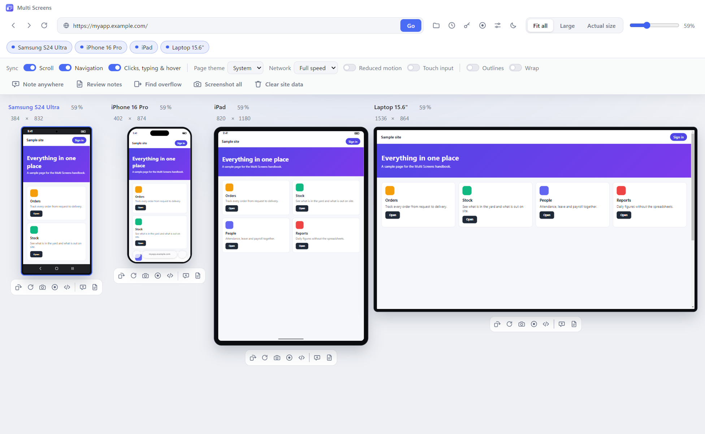
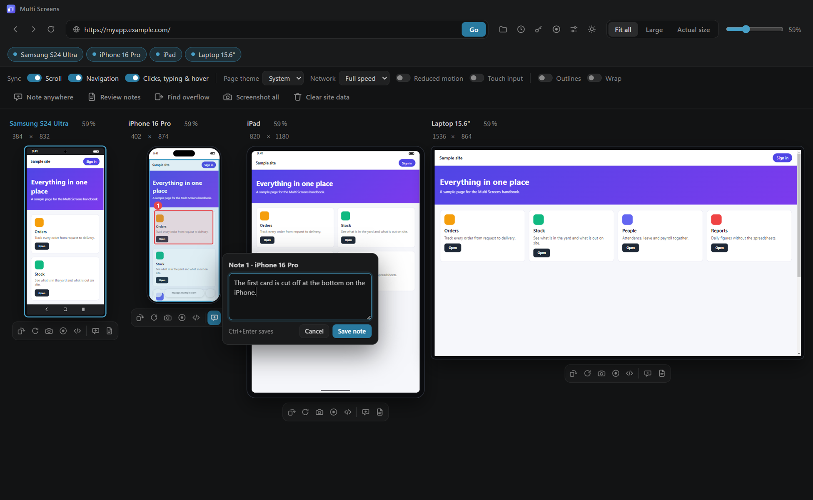
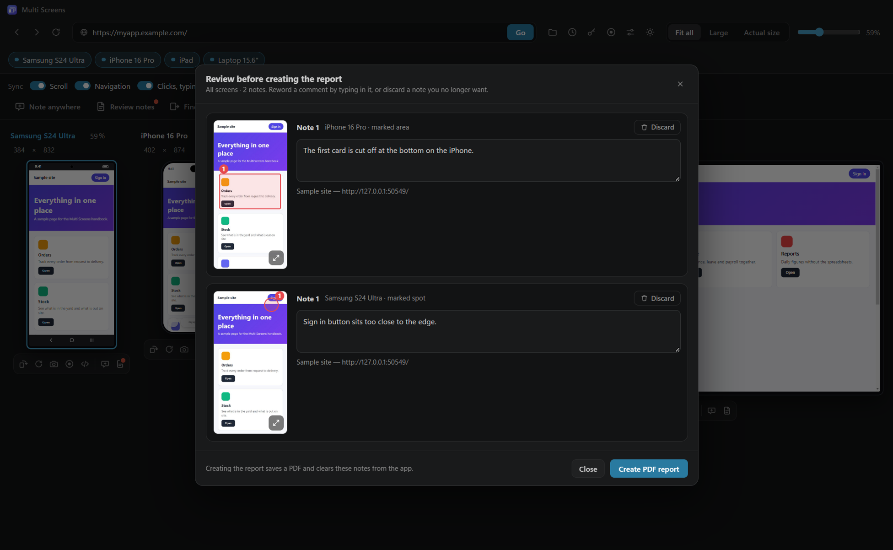
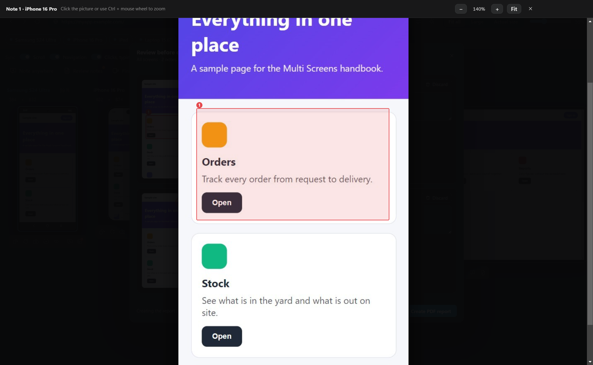
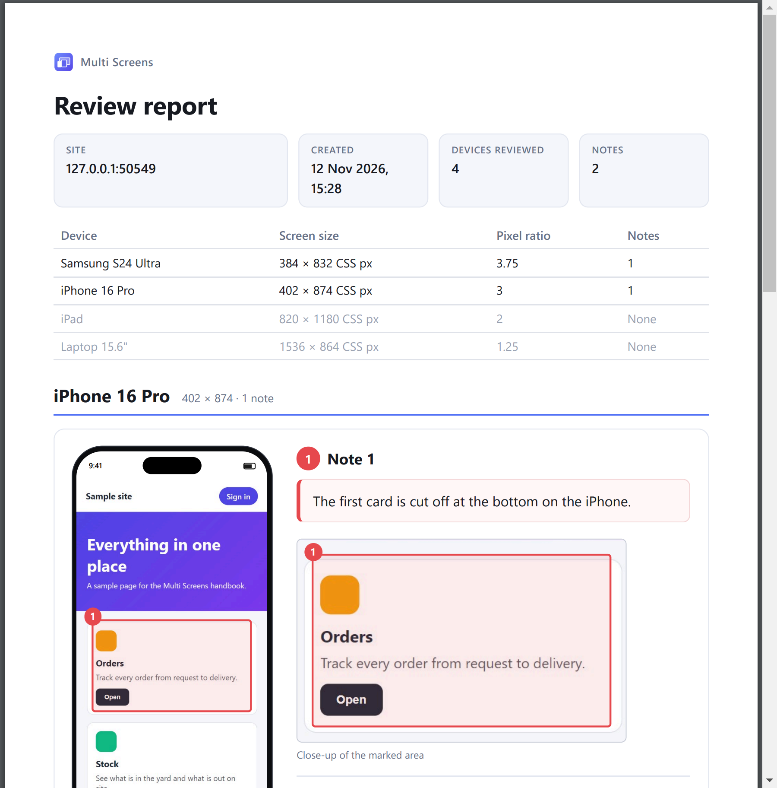
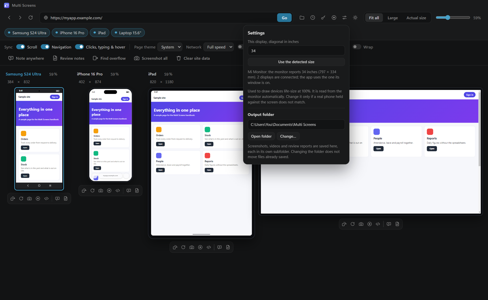

Multi Screens
Handbook
Review one web app on a phone, a tablet and a laptop at the same time. Scroll, click and type once and every screen follows. Mark what is wrong, and hand over a report.
Review one web app on a phone, a tablet and a laptop at the same time. Scroll, click and type once and every screen follows. Mark what is wrong, and hand over a report.
Multi Screens shows a web address on several device screens side by side, each with that device's real screen size, pixel density, touch behaviour and browser identity.
It is built for reviewing a web app before it reaches real devices. Instead of opening the same page on four devices and repeating every step four times, you do it once:
Two files are provided. Use whichever suits you.
| File | What it does |
|---|---|
| Multi-Screens-Setup-1.6.1.exe | Installer. Installs for everyone on the computer, in C:\Program Files\Multi Screens unless you choose another folder, so Windows asks for administrator permission once. It adds Start menu and desktop shortcuts, and can be removed later from Windows Settings. |
| Multi-Screens-1.6.1-portable.exe | A single file. Nothing is installed and no administrator permission is needed. Copy it anywhere, including a USB stick, and double-click it. |
No other software is needed.
Everything the app saves goes into one folder that you choose:
Documents\Multi Screens.Inside that folder the app keeps three subfolders: Screenshots, Videos and Reports. The folder button in the top bar opens it. You can change it later in Settings.
localhost:3000.
| Control | What it does |
|---|---|
| Back, forward, reload | Act on all screens at once. |
| Address bar and Go | Loads an address on every screen. It suggests addresses you have visited. |
| Folder | Opens the output folder. |
| Clock | History of visited pages. |
| Key | Saved logins. |
| Record | Records a video of the whole app window. |
| Sliders | Settings: display size and output folder. |
| Sun or moon | Switches the app between dark and light. |
| Fit all, Large, Actual size | How the screens are sized. See section 5. |
| Zoom slider | Sets a size of your own, from 15% to 150% of life size. |
| Device chips | Show or hide each screen. |
Switches for what is kept in step (Sync), the conditions the page is tested under, layout aids, and on the right the tools: Note anywhere, Review notes, Find overflow, Screenshot all and Clear site data. On narrower windows those tools show as icons only; hover over one to see its name.
Above the screen:
Below the screen, left to right:
The screen you last used is the leader. It is outlined and its name is highlighted.
| Screen | Screen size (CSS px) | Page area (CSS px) | Pixel ratio | Identifies as |
|---|---|---|---|---|
| Samsung S24 Ultra | 384 × 832 | 384 × 745 | 3.75 | Chrome on Android, touch |
| iPhone 16 Pro | 402 × 874 | 402 × 812 | 3 | Safari on iPhone, touch |
| iPad | 820 × 1180 | 820 × 1156 | 2 | Safari on iPad, touch |
| Laptop 15.6" | 1536 × 864 | 1536 × 864 | 1.25 | Chrome on Windows |
"CSS px" are the units a web page works in. They are what your page's breakpoints respond to, and are smaller numbers than the device's hardware pixels.
Each device is drawn with the bars a real one has, and the page gets the space between them. The phone measurements were taken from screenshots of a real iPhone 16 Pro and Samsung S24 Ultra.

Every percentage in the app means the same thing: size compared with the real device. At 100% a screen is drawn life-size on your display.
The number is the same for every screen, and a screen keeps its size whether it is shown alone or beside others. A 6.8-inch phone is always drawn larger than a 6.3-inch one, as in real life.
| View | What it does | Use it when |
|---|---|---|
| Fit all | The largest size at which every screen fits in the window. | You want everything in view. This is the default. |
| Large | Each screen as big as the window allows. Scroll sideways between them. Percentages differ in this view. | You want to look closely at one screen at a time. |
| Actual size | Every screen life-size, at exactly 100%. | You want to judge how big things really are, such as whether a button is easy to tap. |
| Zoom slider | A size of your own, from 15% to 150%. | None of the above suits. |
Type a value into the percentage beside a screen's name. That screen keeps its own size while the others follow the slider, and its percentage is highlighted. Click the small × beside it to make it follow the slider again.
Life-size drawing depends on the physical size of your display, and this is automatic. Each monitor reports its own size in millimetres. The app reads that for every connected display and uses the one its window is on.
Three switches under Sync in the second bar decide what is repeated on the other screens. All are on to begin with.
| Switch | What follows on the other screens |
|---|---|
| Scroll | Scrolling. Screens line up on the same section of the page, not the same percentage scrolled, because a page is much taller on a phone than on a laptop. |
| Navigation | Following a link or moving to another page. |
| Clicks, typing & hover | Clicks, text typed into fields, ticked boxes, and mouse hover effects. |
Write notes on what you see while you review, then turn them into a PDF report with pictures.

Note anywhere, in the second bar, works the same way on the whole app window instead of one device. Use it to mark something that spans several screens, such as the same header compared on two phones. It covers the app window only, not other programs.
A red dot on a report button means there are notes waiting.
Press the report button (the page icon) under a screen for that device's notes, or Review notes in the second bar for all of them. A review screen opens. Nothing is created yet.


The PDF is saved in the Reports subfolder of your output folder. Click the message that appears to open it.

It opens with the site, the date and the counts, then a table of the devices. Each note follows in its own box with:
Pages are numbered.
A report for all screens lists every device that was on show, including those with no notes, so "Devices reviewed" is the number you looked at.
Pictures are saved in the Screenshots subfolder. They show what the device is showing, not the whole scrolling page. A screen flickers for a moment while its picture is taken, because it is redrawn at full size to make the picture sharp.
| Button | What is recorded |
|---|---|
| Record, in the top bar | The whole app window, toolbars included. |
| Record, under a screen | That device only, cut to its body. It stays on that device even if you scroll the row or change the zoom while recording. |
Videos subfolder.Videos are .webm files, which play in web browsers, VLC and the Windows Media Player app. There is no sound. A recording of one device carries that device's name. Only one recording runs at a time.
| Control | What it does |
|---|---|
| Page theme | Tells the page the visitor prefers a light or a dark theme, so you can check both. |
| Network | Simulates Fast 4G, Slow 4G, Slow 3G or Offline on every screen. |
| Reduced motion | Tells the page the visitor prefers less animation. |
| Touch input | Makes the mouse act as a finger on the phone and tablet screens. |
Page theme is separate from the sun or moon button, which changes the appearance of Multi Screens itself.
| Tool | What it does |
|---|---|
| Outlines | Draws a line around every element, which makes spacing and alignment easy to see. |
| Find overflow | Highlights the elements that make a screen scroll sideways, and tells you how many pixels too wide each screen is. |
| Error number | A red number beside a screen's name counts the errors the page has logged. Click it to open developer tools. |
| Developer tools | Opens the browser's inspector for one screen. That screen's device behaviour pauses while it is open and returns when you close it. |
| Wrap | Lets the screens flow onto several rows instead of one. |
Clear site data deletes cookies, sign-in sessions and stored data for the pages you have been viewing, after asking you to confirm. Use it to test as a first-time visitor. It does not delete saved logins, history or notes.
The clock button lists the pages you have opened, newest first, with their titles. Click one to open it on every screen. The address bar also suggests past addresses as you type. Clear all empties the list. Up to 300 pages are kept.
The key button stores sign-in details so you do not retype them while testing.

| Keys | Action |
|---|---|
| F5 or Ctrl + R | Reload all screens |
| Ctrl + Shift + R | Reload all screens without the cache. Shift-clicking the reload button does the same. |
| Ctrl + L | Jump to the address bar |
| Ctrl + Enter | Save the note being written |
| Ctrl + mouse wheel | Zoom the enlarged picture of a note |
| Esc | Close a panel or the enlarged picture, or cancel a note being placed |
| What | Where |
|---|---|
| Screenshots | Screenshots in your output folder |
| Videos | Videos in your output folder |
| Review reports | Reports in your output folder |
| Notes not yet reported | %APPDATA%\Multi Screens\review |
| Saved logins, encrypted | %APPDATA%\Multi Screens\logins.json |
| Settings, history, sign-in sessions | %APPDATA%\Multi Screens |
To find that folder, paste %APPDATA%\Multi Screens into the address bar of File Explorer.
%APPDATA%\Multi Screens folder while the app is closed resets it completely, including saved logins, history and unreported notes. Files in your output folder are not affected.| What you see | What to do |
|---|---|
| "Windows protected your PC" on first run | Choose More info, then Run anyway. The app is not code-signed. |
| A page will not load | Check the address, and that you are online. The Network control may be set to Offline. |
| A click is not repeated on another screen | That screen's layout uses a different element. Click it there directly. |
| Sizes do not match a real phone at 100% | Open Settings and correct the display size. See section 5. |
| A device stops behaving like a phone | Its developer tools are open. Close them. |
| The pointer is a round dot | Touch input is on. Turn it off in the second bar. |
| A video is plain white | The display was asleep or locked. Wake it and record again. |
| You cannot find a screenshot, video or report | Press the folder button in the top bar. |
| An old review's notes appear in a new report | Notes stay until reported or discarded. Open Review notes and discard them first. |
Multi Screens 1.6.1, published by SCAFFApps. This handbook describes that version.